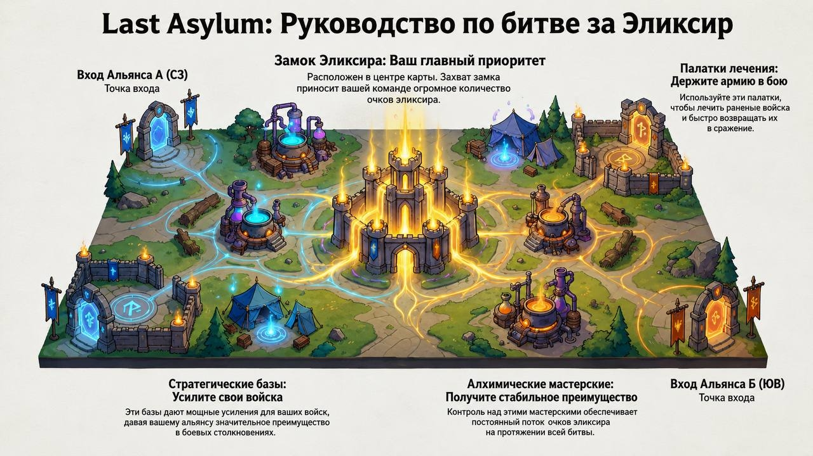

Гонка за эликсиром
🏰 Ключевые строения и их приоритет
На карте 11 строений, и они открываются поэтапно. Вот главные цели:
- Наблюдательный пункт (Обсерватория): открывается с первой минуты, даёт +10% ко всем очкам альянса. Брать его нужно как можно раньше — в начале боя он окупается многократно, а под конец почти бесполезен.
- Врата миграции: доступны сразу, сокращают перезарядку перемещения на 50%, что даёт мобильность и скорость реакции.
- Алхимические мастерские: стоят у входов каждого альянса, дают много очков (30/20) и доступны с первой минуты.
- Замок эликсира: главная цель, открывается на 10-й минуте, даёт больше всего очков (48/32).
- Лечебные палатки: лечат 15 раненых каждые 10 секунд.
- Реликвии войны и Проклятый алтарь: открываются вместе с Замком, дают баф союзникам или дебаф врагам на 15%.
- Лагеря с травами: появляются с 13-й минуты — сбор трав приносит очки без прямого боя.

🎯 Приоритет захвата точек
Порядок захвата по важности и темпам открытия (номера приоритета):
- Наблюдательный пункт — брать первым (+10% ко всем очкам альянса).
- Врата миграции — сразу после, ради мобильности (-50% перезарядки перемещения).
- Алхимическая мастерская у своего входа — «якорь» и стабильный источник очков.
- Замок эликсира — с 10-й минуты главная концентрация сил (48/32).
- Реликвии войны / Проклятый алтарь — баф/дебаф, берут ради контроля над Замком.
- Лечебные палатки — держат армию в бою.
- Лагеря с травами (с 13-й минуты) — очки без боя.

⚔️ Тактика
Строим бой по принципу темпа и мобильности:
- 1. Сначала темп, потом очки. Захватите Наблюдательный пункт и Врата миграции, чтобы получить множитель очков и скорость перемещения. Без этого нас будут переигрывать по всей карте.
- 2. Проверка боем. Более слабые, отправляйте слабые походы первыми. Так вы проверите, стоит ли у врага защита, и не сольёте сильный марш впустую.
- 3. Не защищайтесь всеми силами. Против заведомо более сильного противника лучше снять защиту и сохранить войска, чем отдать их в мясорубке. Основной отряд включайте в оборону только против равного или слабого врага.
- 4. Сбор трав (с 13-й минуты). На карте появляются лагеря с травами. Отправляйте туда отряды (можно слабых), чтобы получать очки без прямого боя.
⏱️ Пошаговый план по фазам
Фаза 1: первые 10 минут — захват темпа
Нельзя просто стоять на точке. Ваша задача — взять здания, которые дают максимальный стартовый разгон.
- Наблюдательный пункт — брать первым, +10% ко всем очкам.
- Врата миграции — критично для контроля, -50% перезарядки перемещения.
- Алхимическая мастерская у своего входа — «якорь» и много очков. Не оставляйте их без защиты.
Фаза 2: 10–13 минут — борьба за центр
На 10-й минуте открывается Замок эликсира.
- Замок эликсира — главная цель, даёт больше всего очков (48/32). Основные силы альянса должны сконцентрироваться на его захвате и удержании. Никогда не покидайте Замок, если он уже ваш; всегда оставляйте там минимум 2–3 защитников.
- Реликвии войны / Проклятый алтарь — ситуативно. Дают баф союзникам или дебаф врагам, берут, если есть свободный сильный отряд, который не нужен в центре. Не распыляйте силы.
Действие: пока основная группа штурмует Замок, отряд поддержки может попытаться взять Реликвии, но только если это не ослабит натиск на центр.
Фаза 3: 13–30 минут — удержание и сбор
- Сбор трав (с 13-й минуты). Отправляйте слабых или освободившихся игроков в лагеря, чтобы они приносили очки без риска потерять ключевые точки.
- Контроль, а не захват. Главная задача — не дать врагу отбить Замок и Обсерваторию. Если у вас численное преимущество на точке, сразу перемещайтесь туда, где нужна помощь.
⏱️ Поминутный план захвата
Детальный план по минутам с конкретными исполнителями.
Фаза 1: 0–10 минут — Захват темпа
Задача: Взять здания, дающие максимальный стартовый разгон, и обеспечить мобильность.
| Время | Игроки | Действие |
|---|---|---|
| 0–1 мин | Защитники Обсерватории: kittt777, Djonny98 | Немедленно захватывают Наблюдательный пункт. Это приоритет №1, чтобы включить множитель очков для всего альянса. |
| 0–2 мин | Захватчики Врат миграции: FrostmourneV2, Aanutka89 | Сразу идут на Врата миграции. Контроль над ними даёт скорость перемещения, без которой альянс будет проигрывать по карте. |
| 1–5 мин | Контроль мастерских: artemsaibel, YanaYa | Занимают Алхимическую мастерскую у своего входа. Это стабильный источник очков и «якорь», который нельзя оставлять без защиты. |
| 2–10 мин | Тяжёлые штурмовики: LFendeR, Vadyxa, Ольгинья, faker2k | Ядро атаки. Начинают давление на центральные точки и мастерские противника, чтобы не дать врагу набрать очки. Не распыляются, а готовятся к рывку на Замок. |
| Постоянно | Ротация / Поддержка: ЧумаВой, Anchorro, Murchik-mur-mur | Помогают там, где начинается самая жаркая борьба, или мешают врагу на соседних точках. Действуют как «скорая помощь» для Альфы и Браво. |
Фаза 2: 10–13 минут — Борьба за центр
Задача: Сконцентрировать основные силы на Замке эликсира.
| Время | Игроки | Действие |
|---|---|---|
| 10:00 | Вся группа «Альфа» (Лидер adom, штурмовики, поддержка) | Замок эликсира открывается. Основные силы немедленно идут на штурм. Штурмовики заходят первыми, ломают защиту и удерживают здание. |
| 10:00+ | Фланговые рейдеры: LAPYlllKA, Mara19Dr | Пока основные силы врага стягиваются к Замку, атакуют вражеские мастерские или лечебные палатки, чтобы ослабить его тыл. |
| 10:00+ | Лидер «Браво»: SharlottaSha | Следит за флангами и появлением угроз. Если враг давит на Замок, может перебросить часть «Браво» на помощь «Альфе». |
| 10–13 мин | Ротация / Поддержка | Если есть свободный сильный отряд, может попытаться взять Реликвии войны / Проклятый алтарь для бафа/дебафа, но только если это не ослабит натиск на Замок. |
Фаза 3: 13–30 минут — Удержание и сбор
Задача: Не отдать захваченные ключевые точки и добрать очки на травах.
| Время | Игроки | Действие |
|---|---|---|
| 13:00 | Сборщики трав: Defibrillator360, Graber, TheMadDoctor26 | В лагерях появляются травы. Отправляются на сбор, чтобы приносить очки без прямого боя и без риска потерять ключевые точки. |
| 13–30 мин | Тяжёлые штурмовики + Защитники Обсерватории | Удержание Замка и Обсерватории. Главная задача — не дать врагу отбить эти объекты. Минимум 2–3 защитника всегда остаются на Замке. |
| 13–30 мин | Фланговые рейдеры | Продолжают рейды на вражеские точки, чтобы мешать сбору и отвлекать силы от центра. |
📜 Ключевые тактические правила
- Всегда атакуйте, не собирайте ралли: атака запускается мгновенно и не может быть отменена.
- Используйте второй отряд для рейдов — отбивайте точки или мешайте сбору, когда основной отряд врага ушёл.
- Не защищайтесь в проигрышном бою: снимайте защиту и сохраняйте войска; основной отряд в оборону — только против равного или слабого противника.
👥 Распределение ролей: 20 бойцов
Бой часто идёт на двух фронтах (две группы по 10 человек), поэтому состав делится на две тактические группы — «Альфа» и «Браво» — плюс два свободных агента.
Группа «Альфа» (10 человек): главный удар и контроль центра
Отвечает за захват и удержание Замка эликсира и Наблюдательного пункта — самых важных объектов по очкам и множителю.
| Роль | Кол-во | Состав | Задача и позиция |
|---|---|---|---|
| Лидер группы (R4/R5) | 1 | adom | Координирует «Альфу», решает о переброске сил на Замок или Обсерваторию; должен быть в центре событий. |
| Тяжёлые штурмовики (Main Force) | 4 | LFendeR, Vadyxa, Ольгинья, faker2k | Ядро атаки на Замок эликсира. Заходят первыми, ломают защиту, удерживают здание. |
| Защитники Обсерватории | 2 | kittt777, Djonny98 | Захватывают Наблюдательный пункт на первой минуте и удерживают его (+10% к очкам). |
| Ротация / Поддержка | 3 | ЧумаВой, Anchorro, Murchik-mur-mur | Помогают там, где идёт самая жаркая борьба, или мешают врагу на соседних точках. |
Группа «Браво» (10 человек): мобильность, фланги и ресурсы
Отвечает за Врата миграции, Алхимические мастерские и сбор трав — обеспечивает тыл и не даёт врагу переиграть по карте.
| Роль | Кол-во | Состав | Задача и позиция |
|---|---|---|---|
| Лидер группы (R4) | 1 | SharlottaSha | Координирует «Браво», следит за появлением лагерей с травами и угрозами на флангах. |
| Захватчики Врат миграции | 2 | FrostmourneV2, Aanutka89 | Приоритет №1 группы: захватывают Врата в первые минуты и удерживают их. |
| Контроль мастерских | 2 | artemsaibel, YanaYa | Держат Алхимическую мастерскую у своего входа — стабильный источник очков и «якорь». |
| Сборщики трав (с 13-й минуты) | 3 | Defibrillator360, Graber, TheMadDoctor26 | Когда появляются лагеря с травами, идут туда и приносят очки без прямого боя. |
| Фланговые рейдеры | 2 | LAPYlllKA, Mara19Dr | Атакуют вражеские мастерские или лечебные палатки, если основные силы врага ушли. |
👤 Индивидуальная тактика по игрокам
Подробные инструкции для каждого участника на случай активной атаки противника.
«Альфа» — центр, Обсерватория и подготовка Замка
adom — лидер «Альфы»
При активной атаке: оценивает, куда враг вложил основные силы. Если враг давит на Обсерваторию — отправляет туда ротацию или одного штурмовика.
Тяжёлые штурмовики: LFendeR, Vadyxa, Ольгинья, faker2k
При активной атаке:
- если враг атакует Замок рано — занимают оборону только против равного или слабого противника; против сильного — отходят и ждут сбора;
- если враг перевложился в Обсерваторию или Врата — один-два штурмовика могут нанести встречный удар, но основная группа не распыляется;
- LFendeR как самый высокий уровень может временно вести локальную оборону, если adom занят другим направлением;
- faker2k действует за старшими, не вступает в одиночные проигрышные бои.
Защитники Обсерватории: kittt777 , Djonny98
До 10-й минуты: Обсерватория — приоритет №1 на 1-й минуте.
При активной атаке:
- kittt777 оценивает силы врага. Если атака слабая — удерживает точку. Если сильная — отходит к Замку/ротации, сообщает adom, не гибнет в обороне.
- Djonny98 — заранее простая установка: при явно превосходящем враге не защищаться в одиночку, уходить к Замку или к мастерской, где есть союзники. Если враг слабый — держать Обсерваторию.
Ротация / поддержка: ЧумаВой, Anchorro, Murchik-mur-mur
До 10-й минуты: «пожарная команда».
При активной атаке:
- если враг давит на Обсерваторию — один игрок идёт на помощь kittt777/Djonny98;
- если враг атакует Врата — один помогает «Браво», но не все трое;
- главное — не стоять без дела и не отдавать точки бесплатно, но и не кормить врага войсками.
«Браво» — Врата, мастерские, фланги
SharlottaSha — лидер «Браво»
До 10-й минуты: координирует Врата миграции, свои мастерские и фланги.
При активной атаке: решает, куда перебросить силы. Если враг активно давит на Замок — отправляет LAPYlllKA и Mara19Dr в центр на помощь «Альфе». Если враг атакует Врата — усиливает FrostmourneV2/Aanutka89 только при реальной возможности отбить; иначе приказывает отойти. Не даёт «Браво» распылиться на второстепенные точки.
Захватчики Врат миграции: FrostmourneV2 , Aanutka89
До 10-й минуты: захватить Врата в первые минуты и удерживать.
При активной атаке:
- если враг пришёл малыми силами — отбивают и держат Врата;
- если враг пришёл крупными силами — не гибнут на Вратах, отходят к мастерским/Замку, сообщают SharlottaSha;
- Врата важны для мобильности, но до 10-й минуты потеря войск на Вратах дороже, чем временная потеря точки.
Контроль мастерских: artemsaibel, YanaYa
До 10-й минуты: держат Алхимическую мастерскую у своего входа — это стабильные очки.
При активной атаке:
- artemsaibel оценивает: слабый налёт — отбить, сильный — снять защиту и отойти;
- YanaYa действует рядом, не остаётся в одиночку;
- если мастерская в безопасности, один из них может точечно помочь на Вратах или у Обсерватории, но не оба сразу.
Сборщики трав: Defibrillator360 , Graber , TheMadDoctor26
До 10-й минуты: вспомогательная роль, до 13-й минуты сбор трав ещё не главный приоритет.
При активной атаке:
- не защищают точки в одиночку;
- Defibrillator360 — при сильной атаке сразу отходит к союзникам/Замку, не пытается героически держать точку;
- Graber и TheMadDoctor26 могут подстраховать Обсерваторию или мастерскую только если это безопасно и есть союзники рядом;
- главное — не потерять этих игроков до 13-й минуты, когда им выходить на травы.
Фланговые рейдеры: LAPYlllKA , Mara19Dr
До 10-й минуты: после Врат и мастерских работают по флангам.
При активной атаке:
- если враг стягивает основные силы к Замку — по тактике немедленно идут на помощь «Альфе» в центр, это их ключевая задача при активном натиске;
- если враг атакует фланг «Браво» — отбивают только слабого противника; против сильного — уходят в рейд по тылам врага, чтобы отвлечь его силы;
- не застревают в бою за второстепенную точку, если горит Замок или Обсерватория.
⚠️ Важное примечание по тактике
Такое распределение не означает, что «Альфа» никогда не помогает «Браво». Лидеры групп должны постоянно быть на связи. Например, если «Браво» видит, что враг стягивает все силы к Замку, их фланговые рейдеры должны немедленно переключиться на помощь «Альфе» в центре. Гибкость и скорость реакции здесь важнее, чем строгое следование ролям.
💡 Сводный гайд по событию

✏️ Участники
Измените имя в поле — и оно мгновенно обновится во всём тексте выше (в таблицах, поминутном плане и индивидуальной тактике).